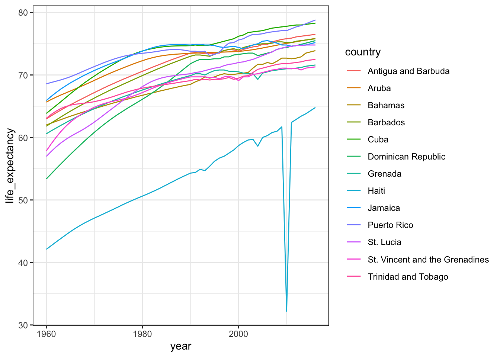
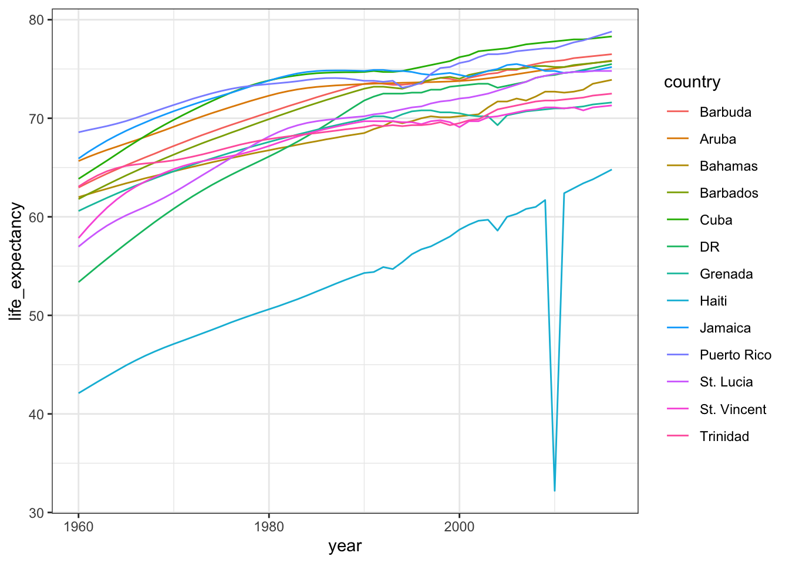

4 Section 3 Overview
In the String Processing section, we use case studies that help demonstrate how string processing is a powerful tool useful for overcoming many data wrangling challenges. You will see how the original raw data was processed to create the data frames we have used in courses throughout this series.
This section is divided into three parts.
After completing the String Processing section, you will be able to:
- Remove unwanted characters from text.
- Extract numeric values from text.
- Find and replace characters.
- Extract specific parts of strings.
- Convert free form text into more uniform formats.
- Split strings into multiple values.
- Use regular expressions (regex) to process strings.
4.1 String Parsing
The textbook for this section is available here.
Key points
- The most common tasks in string processing include:
- extracting numbers from strings
- removing unwanted characters from text
- finding and replacing characters
- extracting specific parts of strings
- converting free form text to more uniform formats
- splitting strings into multiple values
- The stringr package in the tidyverse contains string processing functions that follow a similar naming format (
str_functionname) and are compatible with the pipe.
Code
# read in raw murders data from Wikipedia
url <- "https://en.wikipedia.org/w/index.php?title=Gun_violence_in_the_United_States_by_state&direction=prev&oldid=810166167"
murders_raw <- read_html(url) %>%
html_nodes("table") %>%
html_table() %>%
.[[1]] %>%
setNames(c("state", "population", "total", "murder_rate"))
# inspect data and column classes
head(murders_raw)## state population total murder_rate
## 1 Alabama 4,853,875 348 7.2
## 2 Alaska 737,709 59 8.0
## 3 Arizona 6,817,565 309 4.5
## 4 Arkansas 2,977,853 181 6.1
## 5 California 38,993,940 1,861 4.8
## 6 Colorado 5,448,819 176 3.2class(murders_raw$population)## [1] "character"class(murders_raw$total)## [1] "character"4.2 Defining Strings: Single and Double Quotes and How to Escape
The textbook for this section is available here.
Key points
- Define a string by surrounding text with either single quotes or double quotes.
- To include a single quote inside a string, use double quotes on the outside. To include a double quote inside a string, use single quotes on the outside.
- The
cat()function displays a string as it is represented inside R. - To include a double quote inside of a string surrounded by double quotes, use the backslash () to escape the double quote. Escape a single quote to include it inside of a string defined by single quotes.
- We will see additional uses of the escape later.
Code
s <- "Hello!" # double quotes define a string
s <- 'Hello!' # single quotes define a strings <- `Hello` # backquotes do not
s <- "10"" # error - unclosed quotess <- '10"' # correct
# cat shows what the string actually looks like inside R
cat(s)## 10"s <- "5'"
cat(s)## 5'# to include both single and double quotes in string, escape with \
s <- '5'10"' # error
s <- "5'10"" # error# to include both single and double quotes in string, escape with \
s <- '5\'10"' # correct
cat(s)## 5'10"s <- "5'10\"" # correct
cat(s)## 5'10"4.3 stringr Package
The textbook for this section is available here.
Key points
- The main types of string processing tasks are detecting, locating, extracting and replacing elements of strings.
- The stringr package from the tidyverse includes a variety of string processing functions that begin with
str_and take the string as the first argument, which makes them compatible with the pipe.
Code
# murders_raw defined in web scraping section
# direct conversion to numeric fails because of commas
murders_raw$population[1:3]## [1] "4,853,875" "737,709" "6,817,565"as.numeric(murders_raw$population[1:3])## Warning: NAs introduced by coercion## [1] NA NA NA4.4 Case Study 1: US Murders Data
The textbook for this section is available here.
Key points
- Use the
str_detect()function to determine whether a string contains a certain pattern. - Use the
str_replace_all()function to replace all instances of one pattern with another pattern. To remove a pattern, replace with the empty string (""). - The
parse_number()function removes punctuation from strings and converts them to numeric. mutate_at()performs the same transformation on the specified column numbers.
Code
# murders_raw was defined in the web scraping section
# detect whether there are commas
commas <- function(x) any(str_detect(x, ","))
murders_raw %>% summarize_all(funs(commas))## Warning: `funs()` is deprecated as of dplyr 0.8.0.
## Please use a list of either functions or lambdas:
##
## # Simple named list:
## list(mean = mean, median = median)
##
## # Auto named with `tibble::lst()`:
## tibble::lst(mean, median)
##
## # Using lambdas
## list(~ mean(., trim = .2), ~ median(., na.rm = TRUE))
## This warning is displayed once every 8 hours.
## Call `lifecycle::last_warnings()` to see where this warning was generated.## state population total murder_rate
## 1 FALSE TRUE TRUE FALSE# replace commas with the empty string and convert to numeric
test_1 <- str_replace_all(murders_raw$population, ",", "")
test_1 <- as.numeric(test_1)
# parse_number also removes commas and converts to numeric
test_2 <- parse_number(murders_raw$population)
identical(test_1, test_2)## [1] TRUEmurders_new <- murders_raw %>% mutate_at(2:3, parse_number)
murders_new %>% head## state population total murder_rate
## 1 Alabama 4853875 348 7.2
## 2 Alaska 737709 59 8.0
## 3 Arizona 6817565 309 4.5
## 4 Arkansas 2977853 181 6.1
## 5 California 38993940 1861 4.8
## 6 Colorado 5448819 176 3.24.5 Assessment - String Processing Part 1
- Which of the following is NOT an application of string parsing?
- A. Removing unwanted characters from text.
- B. Extracting numeric values from text.
- C. Formatting numbers and characters so they can easily be displayed in deliverables like papers and presentations.
- D. Splitting strings into multiple values.
- Which of the following commands would not give you an error in R?
-
A.
cat(" LeBron James is 6’8\" ") -
B.
cat(' LeBron James is 6'8" ') -
C.
cat(` LeBron James is 6'8" `) -
D.
cat(" LeBron James is 6\’8" ")
- Which of the following are advantages of the stringr package over string processing functions in base R? Select all that apply.
- A. Base R functions are rarely used for string processing by data scientists so it’s not worth learning them.
- B. Functions in stringr all start with “str_”, which makes them easy to look up using autocomplete.
- C. Stringr functions work better with pipes.
- D. The order of arguments is more consistent in stringr functions than in base R.
- You have a dataframe of monthly sales and profits in R
> head(dat)
# A tibble: 5 x 3
Month Sales Profit
<chr> <chr> <chr>
January $128,568 $16,234
February $109,523 $12,876
March $115,468 $17,920
April $122,274 $15,825
May $117,921 $15,437Which of the following commands could convert the sales and profits columns to numeric? Select all that apply.
-
A.
dat %>% mutate_at(2:3, parse_number) -
B.
dat %>% mutate_at(2:3, as.numeric) -
C.
dat %>% mutate_all(parse_number) -
D.
dat %>% mutate_at(2:3, funs(str_replace_all(., c("\\$|,"), ""))) %>%mutate_at(2:3, as.numeric)
4.6 Case Study 2: Reported Heights
The textbook for this section is available here.
Key points
- In the raw heights data, many students did not report their height as the number of inches as requested. There are many entries with real height information but in the wrong format, which we can extract with string processing.
- When there are both text and numeric entries in a column, the column will be a character vector. Converting this column to numeric will result in NAs for some entries.
- To correct problematic entries, look for patterns that are shared across large numbers of entries, then define rules that identify those patterns and use these rules to write string processing tasks.
- Use
suppressWarnings()to hide warning messages for a function.
Code
# load raw heights data and inspect
data(reported_heights)
class(reported_heights$height)## [1] "character"# convert to numeric, inspect, count NAs
x <- as.numeric(reported_heights$height)## Warning: NAs introduced by coercionhead(x)## [1] 75 70 68 74 61 65sum(is.na(x))## [1] 81# keep only entries that result in NAs
reported_heights %>% mutate(new_height = as.numeric(height)) %>%
filter(is.na(new_height)) %>%
head(n=10)## Warning: Problem with `mutate()` input `new_height`.
## ℹ NAs introduced by coercion
## ℹ Input `new_height` is `as.numeric(height)`.## Warning in mask$eval_all_mutate(dots[[i]]): NAs introduced by coercion## time_stamp sex height new_height
## 1 2014-09-02 15:16:28 Male 5' 4" NA
## 2 2014-09-02 15:16:37 Female 165cm NA
## 3 2014-09-02 15:16:52 Male 5'7 NA
## 4 2014-09-02 15:16:56 Male >9000 NA
## 5 2014-09-02 15:16:56 Male 5'7" NA
## 6 2014-09-02 15:17:09 Female 5'3" NA
## 7 2014-09-02 15:18:00 Male 5 feet and 8.11 inches NA
## 8 2014-09-02 15:19:48 Male 5'11 NA
## 9 2014-09-04 00:46:45 Male 5'9'' NA
## 10 2014-09-04 10:29:44 Male 5'10'' NA# calculate cutoffs that cover 99.999% of human population
alpha <- 1/10^6
qnorm(1-alpha/2, 69.1, 2.9)## [1] 83.28575qnorm(alpha/2, 63.7, 2.7)## [1] 50.49258# keep only entries that either result in NAs or are outside the plausible range of heights
not_inches <- function(x, smallest = 50, tallest = 84){
inches <- suppressWarnings(as.numeric(x))
ind <- is.na(inches) | inches < smallest | inches > tallest
ind
}
# number of problematic entries
problems <- reported_heights %>%
filter(not_inches(height)) %>%
.$height
length(problems)## [1] 292# 10 examples of x'y or x'y" or x'y\"
pattern <- "^\\d\\s*'\\s*\\d{1,2}\\.*\\d*'*\"*$"
str_subset(problems, pattern) %>% head(n=10) %>% cat## 5' 4" 5'7 5'7" 5'3" 5'11 5'9'' 5'10'' 5' 10 5'5" 5'2"# 10 examples of x.y or x,y
pattern <- "^[4-6]\\s*[\\.|,]\\s*([0-9]|10|11)$"
str_subset(problems, pattern) %>% head(n=10) %>% cat## 5.3 5.5 6.5 5.8 5.6 5,3 5.9 6,8 5.5 6.2# 10 examples of entries in cm rather than inches
ind <- which(between(suppressWarnings(as.numeric(problems))/2.54, 54, 81) )
ind <- ind[!is.na(ind)]
problems[ind] %>% head(n=10) %>% cat## 150 175 177 178 163 175 178 165 165 1804.7 Regex
The textbook for this section is available here through section 24.5.2.
Key points
- A regular expression (regex) is a way to describe a specific pattern of characters of text. A set of rules has been designed to do this specifically and efficiently.
- stringr functions can take a regex as a pattern.
str_detect()indicates whether a pattern is present in a string.- The main difference between a regex and a regular string is that a regex can include special characters.
- The | symbol inside a regex means “or”.
- Use
'\\d'to represent digits. The backlash is used to distinguish it from the character'd'. In R, you must use two backslashes for digits in regular expressions; in some other languages, you will only use one backslash for regex special characters. str_view()highlights the first occurrence of a pattern, and thestr_view_all()function highlights all occurrences of the pattern.
Code
# detect whether a comma is present
pattern <- ","
str_detect(murders_raw$total, pattern)
# show the subset of strings including "cm"
str_subset(reported_heights$height, "cm")
# use the "or" symbol inside a regex (|)
yes <- c("180 cm", "70 inches")
no <- c("180", "70''")
s <- c(yes, no)
str_detect(s, "cm") | str_detect(s, "inches")
str_detect(s, "cm|inches")
# highlight the first occurrence of a pattern
str_view(s, pattern)
# highlight all instances of a pattern
str_view_all(s, pattern)4.8 Character Classes, Anchors and Quantifiers
The textbook for this section is available here, here and here
Key points
- Define strings to test your regular expressions, including some elements that match and some that do not. This allows you to check for the two types of errors: failing to match and matching incorrectly.
- Square brackets define character classes: groups of characters that count as matching the pattern. You can use ranges to define character classes, such as
[0-9]for digits and[a-zA-Z]for all letters. - Anchors define patterns that must start or end at specific places.
^and$represent the beginning and end of the string respectively. - Curly braces are quantifiers that state how many times a certain character can be repeated in the pattern.
\\d{1,2}matches exactly 1 or 2 consecutive digits.
Code
# s was defined in the previous section
yes <- c("5", "6", "5'10", "5 feet", "4'11")
no <- c("", ".", "Five", "six")
s <- c(yes, no)
pattern <- "\\d"
# [56] means 5 or 6
str_view(s, "[56]")
# [4-7] means 4, 5, 6 or 7
yes <- as.character(4:7)
no <- as.character(1:3)
s <- c(yes, no)
str_detect(s, "[4-7]")
# ^ means start of string, $ means end of string
pattern <- "^\\d$"
yes <- c("1", "5", "9")
no <- c("12", "123", " 1", "a4", "b")
s <- c(yes, no)
str_view(s, pattern)
# curly braces define quantifiers: 1 or 2 digits
pattern <- "^\\d{1,2}$"
yes <- c("1", "5", "9", "12")
no <- c("123", "a4", "b")
str_view(c(yes, no), pattern)
# combining character class, anchors and quantifier
pattern <- "^[4-7]'\\d{1,2}\"$"
yes <- c("5'7\"", "6'2\"", "5'12\"")
no <- c("6,2\"", "6.2\"","I am 5'11\"", "3'2\"", "64")
str_detect(yes, pattern)
str_detect(no, pattern)4.9 Search and Replace with Regex
The textbook for this section is available:
Key points
str_replace()replaces the first instance of the detected pattern with a specified string.- Spaces are characters and R does not ignore them. Spaces are specified by the special character
\\s. - Additional quantifiers include
*,+and?.*means 0 or more instances of the previous character.?means 0 or 1 instances.+means 1 or more instances. - Before removing characters from strings with functions like
str_replace()andstr_replace_all(), consider whether that replacement would have unintended effects.
Code
# number of entries matching our desired pattern
pattern <- "^[4-7]'\\d{1,2}\"$"
sum(str_detect(problems, pattern))
# inspect examples of entries with problems
problems[c(2, 10, 11, 12, 15)] %>% str_view(pattern)
str_subset(problems, "inches")
str_subset(problems, "''")
# replace or remove feet/inches words before matching
pattern <- "^[4-7]'\\d{1,2}$"
problems %>%
str_replace("feet|ft|foot", "'") %>% # replace feet, ft, foot with '
str_replace("inches|in|''|\"", "") %>% # remove all inches symbols
str_detect(pattern) %>%
sum()
# R does not ignore whitespace
identical("Hi", "Hi ")
# \\s represents whitespace
pattern_2 <- "^[4-7]'\\s\\d{1,2}\"$"
str_subset(problems, pattern_2)
# * means 0 or more instances of a character
yes <- c("AB", "A1B", "A11B", "A111B", "A1111B")
no <- c("A2B", "A21B")
str_detect(yes, "A1*B")
str_detect(no, "A1*B")
# test how *, ? and + differ
data.frame(string = c("AB", "A1B", "A11B", "A111B", "A1111B"),
none_or_more = str_detect(yes, "A1*B"),
nore_or_once = str_detect(yes, "A1?B"),
once_or_more = str_detect(yes, "A1+B"))
# update pattern by adding optional spaces before and after feet symbol
pattern <- "^[4-7]\\s*'\\s*\\d{1,2}$"
problems %>%
str_replace("feet|ft|foot", "'") %>% # replace feet, ft, foot with '
str_replace("inches|in|''|\"", "") %>% # remove all inches symbols
str_detect(pattern) %>%
sum()4.10 Groups with Regex
The textbook for this section is available here.
Key Points
- Groups are defined using parentheses.
- Once we define groups, we can use the function
str_match()to extract the values these groups define.str_extract()extracts only strings that match a pattern, not the values defined by groups. - You can refer to the ith group with
\\i. For example, refer to the value in the second group with\\2.
Code
# define regex with and without groups
pattern_without_groups <- "^[4-7],\\d*$"
pattern_with_groups <- "^([4-7]),(\\d*)$"
# create examples
yes <- c("5,9", "5,11", "6,", "6,1")
no <- c("5'9", ",", "2,8", "6.1.1")
s <- c(yes, no)
# demonstrate the effect of groups
str_detect(s, pattern_without_groups)## [1] TRUE TRUE TRUE TRUE FALSE FALSE FALSE FALSEstr_detect(s, pattern_with_groups)## [1] TRUE TRUE TRUE TRUE FALSE FALSE FALSE FALSE# demonstrate difference between str_match and str_extract
str_match(s, pattern_with_groups)## [,1] [,2] [,3]
## [1,] "5,9" "5" "9"
## [2,] "5,11" "5" "11"
## [3,] "6," "6" ""
## [4,] "6,1" "6" "1"
## [5,] NA NA NA
## [6,] NA NA NA
## [7,] NA NA NA
## [8,] NA NA NAstr_extract(s, pattern_with_groups)## [1] "5,9" "5,11" "6," "6,1" NA NA NA NA# improve the pattern to recognize more events
pattern_with_groups <- "^([4-7]),(\\d*)$"
yes <- c("5,9", "5,11", "6,", "6,1")
no <- c("5'9", ",", "2,8", "6.1.1")
s <- c(yes, no)
str_replace(s, pattern_with_groups, "\\1'\\2")## [1] "5'9" "5'11" "6'" "6'1" "5'9" "," "2,8" "6.1.1"# final pattern
pattern_with_groups <-"^([4-7])\\s*[,\\.\\s+]\\s*(\\d*)$"
# combine stringr commands with the pipe
str_subset(problems, pattern_with_groups) %>% head## [1] "5.3" "5.25" "5.5" "6.5" "5.8" "5.6"str_subset(problems, pattern_with_groups) %>%
str_replace(pattern_with_groups, "\\1'\\2") %>% head## [1] "5'3" "5'25" "5'5" "6'5" "5'8" "5'6"4.11 Testing and Improving
The textbook for this section is available here.
Key points
- Wrangling with regular expressions is often an iterative process of testing the approach, looking for problematic entries, and improving the patterns.
- Use the pipe to connect stringr functions.
- It may not be worth writing code to correct every unique problem in the data, but string processing techniques are flexible enough for most needs.
Code
# function to detect entries with problems
not_inches_or_cm <- function(x, smallest = 50, tallest = 84){
inches <- suppressWarnings(as.numeric(x))
ind <- !is.na(inches) &
((inches >= smallest & inches <= tallest) |
(inches/2.54 >= smallest & inches/2.54 <= tallest))
!ind
}
# identify entries with problems
problems <- reported_heights %>%
filter(not_inches_or_cm(height)) %>%
.$height
length(problems)## [1] 200converted <- problems %>%
str_replace("feet|foot|ft", "'") %>% #convert feet symbols to '
str_replace("inches|in|''|\"", "") %>% #remove inches symbols
str_replace("^([4-7])\\s*[,\\.\\s+]\\s*(\\d*)$", "\\1'\\2") ##change format
# find proportion of entries that fit the pattern after reformatting
pattern <- "^[4-7]\\s*'\\s*\\d{1,2}$"
index <- str_detect(converted, pattern)
mean(index)## [1] 0.615converted[!index] # show problems## [1] "6" "165cm" "511" "6" "2" ">9000" "5 ' and 8.11 " "11111" "6" "103.2" "19"
## [12] "5" "300" "6'" "6" "Five ' eight " "7" "214" "6" "0.7" "6" "2'33"
## [23] "612" "1,70" "87" "5'7.5" "5'7.5" "111" "5' 7.78" "12" "6" "yyy" "89"
## [34] "34" "25" "6" "6" "22" "684" "6" "1" "1" "6*12" "87"
## [45] "6" "1.6" "120" "120" "23" "1.7" "6" "5" "69" "5' 9 " "5 ' 9 "
## [56] "6" "6" "86" "708,661" "5 ' 6 " "6" "649,606" "10000" "1" "728,346" "0"
## [67] "6" "6" "6" "100" "88" "6" "170 cm" "7,283,465" "5" "5" "34"4.12 Assessment - String Processing Part 2
- In the video, we use the function
not_inchesto identify heights that were incorrectly entered
not_inches <- function(x, smallest = 50, tallest = 84) {
inches <- suppressWarnings(as.numeric(x))
ind <- is.na(inches) | inches < smallest | inches > tallest
ind
}In this function, what TWO types of values are identified as not being correctly formatted in inches?
- A. Values that specifically contain apostrophes (‘), periods (.) or quotations (“).
- B. Values that result in NA’s when converted to numeric
- C. Values less than 50 inches or greater than 84 inches
- D. Values that are stored as a character class, because most are already classed as numeric.
- Which of the following arguments, when passed to the function
not_inches, would return the vectorc(FALSE)?
-
A.
c(175) -
B.
c(“5’8\””) -
C.
c(70) -
D.
c(85)(the height of Shaquille O’Neal in inches)
- Our function
not_inchesreturns the objectind. Which answer correctly describesind?
-
A.
indis a logical vector of TRUE and FALSE, equal in length to the vectorx(in the arguments list). TRUE indicates that a height entry is incorrectly formatted. -
B.
indis a logical vector of TRUE and FALSE, equal in length to the vectorx(in the arguments list). TRUE indicates that a height entry is correctly formatted. -
C.
indis a data frame like ourreported_heightstable but with an extra column of TRUE or FALSE. TRUE indicates that a height entry is incorrectly formatted. -
D.
indis a numeric vector equal toreported_heights$heightsbut with incorrectly formatted heights replaced with NAs.
- Given the following code
s <- c("70", "5 ft", "4'11", "", ".", "Six feet")
s## [1] "70" "5 ft" "4'11" "" "." "Six feet"What pattern vector yields the following result?
str_view_all(s, pattern)
70
5 ft
4’11
.
Six feetpattern <- "\\d|ft"
str_view_all(s, pattern)-
A.
pattern <- "\\d|ft" -
B.
pattern <- "\d|ft" -
C.
pattern <- "\\d\\d|ft" -
D.
pattern <- "\\d|feet"
- You enter the following set of commands into your R console. What is your printed result?
animals <- c("cat", "puppy", "Moose", "MONKEY")
pattern <- "[a-z]"
str_detect(animals, pattern)## [1] TRUE TRUE TRUE FALSE- A. TRUE
- B. TRUE TRUE TRUE TRUE
- C. TRUE TRUE TRUE FALSE
- D. TRUE TRUE FALSE FALSE
- You enter the following set of commands into your R console. What is your printed result?
animals <- c("cat", "puppy", "Moose", "MONKEY")
pattern <- "[A-Z]$"
str_detect(animals, pattern)## [1] FALSE FALSE FALSE TRUE- A. FALSE FALSE FALSE FALSE
- B. FALSE FALSE TRUE TRUE
- C. FALSE FALSE FALSE TRUE
- D. TRUE TRUE TRUE FALSE
- You enter the following set of commands into your R console. What is your printed result?
animals <- c("cat", "puppy", "Moose", "MONKEY")
pattern <- "[a-z]{4,5}"
str_detect(animals, pattern)## [1] FALSE TRUE TRUE FALSE- A. FALSE TRUE TRUE FALSE
- B. TRUE TRUE FALSE FALSE
- C. FALSE FALSE FALSE TRUE
- D. TRUE TRUE TRUE FALSE
- Given the following code
animals <- c(“moose”, “monkey”, “meerkat”, “mountain lion”)
------------
str_detect(animals, pattern)Which TWO “pattern” vectors would yield the following result?
[1] TRUE TRUE TRUE TRUEanimals <- c("moose", "monkey", "meerkat", "mountain lion")
pattern <- "mo*"
str_detect(animals, pattern)## [1] TRUE TRUE TRUE TRUEanimals <- c("moose", "monkey", "meerkat", "mountain lion")
pattern <- "mo?"
str_detect(animals, pattern)## [1] TRUE TRUE TRUE TRUE-
A.
pattern <- "mo*" -
B.
pattern <- "mo?" -
C.
pattern <- "mo+" -
D.
pattern <- "moo*"
- You are working on some data from different universities. You have the following vector
schools <- c("U. Kentucky", "Univ New Hampshire", "Univ. of Massachusetts", "University Georgia", "U California", "California State University")
schools## [1] "U. Kentucky" "Univ New Hampshire" "Univ. of Massachusetts" "University Georgia" "U California"
## [6] "California State University"You want to clean this data to match the full names of each university
> final
[1] "University of Kentucky" "University of New Hampshire" "University of Massachusetts" "University of Georgia"
[5] "University of California" "California State University"What of the following commands could accomplish this?
schools %>%
str_replace("^Univ\\.?\\s|^U\\.?\\s", "University ") %>%
str_replace("^University of |^University ", "University of ")## [1] "University of Kentucky" "University of New Hampshire" "University of Massachusetts" "University of Georgia" "University of California"
## [6] "California State University"- A.
schools %>%
str_replace("Univ\\.?|U\\.?", "University ") %>%
str_replace("^University of |^University ", "University of ")- B.
schools %>%
str_replace("^Univ\\.?\\s|^U\\.?\\s", "University ") %>%
str_replace("^University of |^University ", "University of ")- C.
schools %>%
str_replace("^Univ\\.\\s|^U\\.\\s", "University") %>%
str_replace("^University of |^University ", "University of ")- D.
schools %>%
str_replace("^Univ\\.?\\s|^U\\.?\\s", "University") %>%
str_replace("University ", "University of ")- Rather than using the
pattern_with_groupsvector, you accidentally write in the following code
problems <- c("5.3", "5,5", "6 1", "5 .11", "5, 12")
pattern_with_groups <- "^([4-7])[,\\.](\\d*)$"
str_replace(problems, pattern_with_groups, "\\1'\\2")## [1] "5'3" "5'5" "6 1" "5 .11" "5, 12"What is your result?
-
A.
[1] "5'3" "5'5" "6 1" "5 .11" "5, 12" -
B.
[1] “5.3” “5,5” “6 1” “5 .11” “5, 12” -
C.
[1] “5’3” “5’5” “6’1” “5 .11” “5, 12” -
D.
[1] “5’3” “5’5” “6’1” “5’11” “5’12”
- You notice your mistake and correct your pattern regex to the following
problems <- c("5.3", "5,5", "6 1", "5 .11", "5, 12")
pattern_with_groups <- "^([4-7])[,\\.\\s](\\d*)$"
str_replace(problems, pattern_with_groups, "\\1'\\2")## [1] "5'3" "5'5" "6'1" "5 .11" "5, 12"What is your result?
-
A.
[1] “5’3” “5’5” “6 1” “5 .11” “5, 12” -
B.
[1] “5.3” “5,5” “6 1” “5 .11” “5, 12” -
C.
[1] "5'3" "5'5" "6'1" "5 .11" "5, 12" -
D.
[1] “5’3” “5’5” “6’1” “5’11” “5’12”
- In our example, we use the following code to detect height entries that do not match our pattern of x’y”.
converted <- problems %>%
str_replace("feet|foot|ft", "'") %>%
str_replace("inches|in|''|\"", "") %>%
str_replace("^([4-7])\\s*[,\\.\\s+]\\s*(\\d*)$", "\\1'\\2")
pattern <- "^[4-7]\\s*'\\s*\\d{1,2}$"
index <- str_detect(converted, pattern)
converted[!index]## character(0)Which answer best describes the differences between the regex string we use as an argument in str_replace("^([4-7])\\s*[,\\.\\s+]\\s*(\\d*)$", "\\1'\\2") and the regex string in pattern <- "^[4-7]\\s*'\\s*\\d{1,2}$"?
-
A. The regex used in
str_replace()looks for either a comma, period or space between the feet and inches digits, while the pattern regex just looks for an apostrophe; the regex in str_replace allows for one or more digits to be entered as inches, while the pattern regex only allows for one or two digits. -
B. The regex used in
str_replace()allows for additional spaces between the feet and inches digits, but the pattern regex does not. -
C. The regex used in
str_replace()looks for either a comma, period or space between the feet and inches digits, while the pattern regex just looks for an apostrophe; the regex in str_replace allows none or more digits to be entered as inches, while the pattern regex only allows for the number 1 or 2 to be used. -
D. The regex used in
str_replace()looks for either a comma, period or space between the feet and inches digits, while the pattern regex just looks for an apostrophe; the regex in str_replace allows for none or more digits to be entered as inches, while the pattern regex only allows for one or two digits.
- You notice a few entries that are not being properly converted using your
str_replaceandstr_detectcode
yes <- c("5 feet 7inches", "5 7")
no <- c("5ft 9 inches", "5 ft 9 inches")
s <- c(yes, no)
converted <- s %>%
str_replace("feet|foot|ft", "'") %>%
str_replace("inches|in|''|\"", "") %>%
str_replace("^([4-7])\\s*[,\\.\\s+]\\s*(\\d*)$", "\\1'\\2")
pattern <- "^[4-7]\\s*'\\s*\\d{1,2}$"
str_detect(converted, pattern)
[1] TRUE TRUE FALSE FALSEIt seems like the problem may be due to spaces around the words feet|foot|ft and inches|in. What is another way you could fix this problem?
yes <- c("5 feet 7inches", "5 7")
no <- c("5ft 9 inches", "5 ft 9 inches")
s <- c(yes, no)
converted <- s %>%
str_replace("\\s*(feet|foot|ft)\\s*", "'") %>%
str_replace("\\s*(inches|in|''|\")\\s*", "") %>%
str_replace("^([4-7])\\s*[,\\.\\s+]\\s*(\\d*)$", "\\1'\\2")
pattern <- "^[4-7]\\s*'\\s*\\d{1,2}$"
str_detect(converted, pattern)## [1] TRUE TRUE TRUE TRUE- A.
converted <- s %>%
str_replace("\\s*(feet|foot|ft)\\s*", "'") %>%
str_replace("\\s*(inches|in|''|\")\\s*", "") %>%
str_replace("^([4-7])\\s*[,\\.\\s+]\\s*(\\d*)$", "\\1'\\2")- B.
converted <- s %>%
str_replace("\\s+feet|foot|ft\\s+”, "'") %>%
str_replace("\\s+inches|in|''|\"\\s+", "") %>%
str_replace("^([4-7])\\s*[,\\.\\s+]\\s*(\\d*)$", "\\1'\\2")- C.
converted <- s %>%
str_replace("\\s*|feet|foot|ft", "'") %>%
str_replace("\\s*|inches|in|''|\"", "") %>%
str_replace("^([4-7])\\s*[,\\.\\s+]\\s*(\\d*)$", "\\1'\\2") - D.
converted <- s %>%
str_replace_all(“\\s”, “”) %>%
str_replace("\\s|feet|foot|ft", "'") %>%
str_replace("\\s|inches|in|''|\"", "") %>%
str_replace("^([4-7])\\s*[,\\.\\s+]\\s*(\\d*)$", "\\1'\\2")4.13 Separate with Regex
The textbook for this section is available here.
Key Point
- The
extract()function behaves similarly to the separate() function but allows extraction of groups from regular expressions.
Code
# first example - normally formatted heights
s <- c("5'10", "6'1")
tab <- data.frame(x = s)
# the separate and extract functions behave similarly
tab %>% separate(x, c("feet", "inches"), sep = "'")## feet inches
## 1 5 10
## 2 6 1tab %>% extract(x, c("feet", "inches"), regex = "(\\d)'(\\d{1,2})")## feet inches
## 1 5 10
## 2 6 1# second example - some heights with unusual formats
s <- c("5'10", "6'1\"","5'8inches")
tab <- data.frame(x = s)
# separate fails because it leaves in extra characters, but extract keeps only the digits because of regex groups
tab %>% separate(x, c("feet","inches"), sep = "'", fill = "right")## feet inches
## 1 5 10
## 2 6 1"
## 3 5 8inchestab %>% extract(x, c("feet", "inches"), regex = "(\\d)'(\\d{1,2})")## feet inches
## 1 5 10
## 2 6 1
## 3 5 84.14 Using Groups and Quantifiers
The textbook for this section is available here; through 24.10.
Four clear patterns of entries have arisen along with some other minor problems:
- Many students measuring exactly 5 or 6 feet did not enter any inches. For example, 6’ - our pattern requires that inches be included.
- Some students measuring exactly 5 or 6 feet entered just that number.
- Some of the inches were entered with decimal points. For example 5’7.5’’. Our pattern only looks for two digits.
- Some entires have spaces at the end, for example 5 ’ 9.
- Some entries are in meters and some of these use European decimals: 1.6, 1,7.
- Two students added cm.
- One student spelled out the numbers: Five foot eight inches. It is not necessarily clear that it is worth writing code to handle all these cases since they might be rare enough. However, some give us an opportunity to learn some more regex techniques so we will build a fix.
Case 1
For case 1, if we add a ’0 to, for example, convert all 6 to 6’0, then our pattern will match. This can be done using groups using the following code:
yes <- c("5", "6", "5")
no <- c("5'", "5''", "5'4")
s <- c(yes, no)
str_replace(s, "^([4-7])$", "\\1'0")The pattern says it has to start (^), be followed with a digit between 4 and 7, and then end there ($). The parenthesis defines the group that we pass as \1 to the replace regex.
Cases 2 and 4
We can adapt this code slightly to handle case 2 as well which covers the entry 5’. Note that the 5’ is left untouched by the code above. This is because the extra ’ makes the pattern not match since we have to end with a 5 or 6. To handle case 2, we want to permit the 5 or 6 to be followed by no or one symbol for feet. So we can simply add ’{0,1} after the ’ to do this. We can also use the none or once special character ?. As we saw previously, this is different from * which is none or more. We now see that this code also handles the fourth case as well:
str_replace(s, "^([56])'?$", "\\1'0")Note that here we only permit 5 and 6 but not 4 and 7. This is because heights of exactly 5 and exactly 6 feet tall are quite common, so we assume those that typed 5 or 6 really meant either 60 or 72 inches. However, heights of exactly 4 or exactly 7 feet tall are so rare that, although we accept 84 as a valid entry, we assume that a 7 was entered in error.
Case 3
We can use quantifiers to deal with case 3. These entries are not matched because the inches include decimals and our pattern does not permit this. We need allow the second group to include decimals and not just digits. This means we must permit zero or one period . followed by zero or more digits. So we will use both ? and *. Also remember that for this particular case, the period needs to be escaped since it is a special character (it means any character except a line break).
So we can adapt our pattern, currently ^[4-7]\\s*'\\s*\\d{1,2}$, to permit a decimal at the end:
pattern <- "^[4-7]\\s*'\\s*(\\d+\\.?\\d*)$"Case 5
Case 5, meters using commas, we can approach similarly to how we converted the x.y to x’y. A difference is that we require that the first digit is 1 or 2:
yes <- c("1,7", "1, 8", "2, " )
no <- c("5,8", "5,3,2", "1.7")
s <- c(yes, no)
str_replace(s, "^([12])\\s*,\\s*(\\d*)$", "\\1\\.\\2")We will later check if the entries are meters using their numeric values.
Trimming
In general, spaces at the start or end of the string are uninformative. These can be particularly deceptive because sometimes they can be hard to see:
s <- "Hi "
cat(s)
identical(s, "Hi")This is a general enough problem that there is a function dedicated to removing them: str_trim.
str_trim("5 ' 9 ")To upper and to lower case
One of the entries writes out numbers as words: Five foot eight inches. Although not efficient, we could add 12 extra str_replace to convert zero to 0, one to 1, and so on. To avoid having to write two separate operations for Zero and zero, One and one, etc., we can use the str_to_lower() function to make all words lower case first:
s <- c("Five feet eight inches")
str_to_lower(s)Putting it into a function
We are now ready to define a procedure that handles converting all the problematic cases.
We can now put all this together into a function that takes a string vector and tries to convert as many strings as possible to a single format. Below is a function that puts together the previous code replacements:
convert_format <- function(s){
s %>%
str_replace("feet|foot|ft", "'") %>% #convert feet symbols to '
str_replace_all("inches|in|''|\"|cm|and", "") %>% #remove inches and other symbols
str_replace("^([4-7])\\s*[,\\.\\s+]\\s*(\\d*)$", "\\1'\\2") %>% #change x.y, x,y x y
str_replace("^([56])'?$", "\\1'0") %>% #add 0 when to 5 or 6
str_replace("^([12])\\s*,\\s*(\\d*)$", "\\1\\.\\2") %>% #change european decimal
str_trim() #remove extra space
}We can also write a function that converts words to numbers:
words_to_numbers <- function(s){
str_to_lower(s) %>%
str_replace_all("zero", "0") %>%
str_replace_all("one", "1") %>%
str_replace_all("two", "2") %>%
str_replace_all("three", "3") %>%
str_replace_all("four", "4") %>%
str_replace_all("five", "5") %>%
str_replace_all("six", "6") %>%
str_replace_all("seven", "7") %>%
str_replace_all("eight", "8") %>%
str_replace_all("nine", "9") %>%
str_replace_all("ten", "10") %>%
str_replace_all("eleven", "11")
}Now we can see which problematic entries remain:
converted <- problems %>% words_to_numbers %>% convert_format
remaining_problems <- converted[not_inches_or_cm(converted)]
pattern <- "^[4-7]\\s*'\\s*\\d+\\.?\\d*$"
index <- str_detect(remaining_problems, pattern)
remaining_problems[!index]4.15 Putting it All Together
We are now ready to put everything we’ve done so far together and wrangle our reported heights data as we try to recover as many heights as possible. The code is complex but we will break it down into parts.
We start by cleaning up the height column so that the heights are closer to a feet’inches format. We added an original heights column so we can compare before and after.
Let’s start by writing a function that cleans up strings so that all the feet and inches formats use the same x’y format when appropriate.
pattern <- "^([4-7])\\s*'\\s*(\\d+\\.?\\d*)$"
convert_format <- function(s){
s %>%
str_replace("feet|foot|ft", "'") %>% #convert feet symbols to '
str_replace_all("inches|in|''|\"|cm|and", "") %>% #remove inches and other symbols
str_replace("^([4-7])\\s*[,\\.\\s+]\\s*(\\d*)$", "\\1'\\2") %>% #change x.y, x,y x y
str_replace("^([56])'?$", "\\1'0") %>% #add 0 when to 5 or 6
str_replace("^([12])\\s*,\\s*(\\d*)$", "\\1\\.\\2") %>% #change european decimal
str_trim() #remove extra space
}
words_to_numbers <- function(s){
str_to_lower(s) %>%
str_replace_all("zero", "0") %>%
str_replace_all("one", "1") %>%
str_replace_all("two", "2") %>%
str_replace_all("three", "3") %>%
str_replace_all("four", "4") %>%
str_replace_all("five", "5") %>%
str_replace_all("six", "6") %>%
str_replace_all("seven", "7") %>%
str_replace_all("eight", "8") %>%
str_replace_all("nine", "9") %>%
str_replace_all("ten", "10") %>%
str_replace_all("eleven", "11")
}
smallest <- 50
tallest <- 84
new_heights <- reported_heights %>%
mutate(original = height,
height = words_to_numbers(height) %>% convert_format()) %>%
extract(height, c("feet", "inches"), regex = pattern, remove = FALSE) %>%
mutate_at(c("height", "feet", "inches"), as.numeric) %>%
mutate(guess = 12*feet + inches) %>%
mutate(height = case_when(
!is.na(height) & between(height, smallest, tallest) ~ height, #inches
!is.na(height) & between(height/2.54, smallest, tallest) ~ height/2.54, #centimeters
!is.na(height) & between(height*100/2.54, smallest, tallest) ~ height*100/2.54, #meters
!is.na(guess) & inches < 12 & between(guess, smallest, tallest) ~ guess, #feet'inches
TRUE ~ as.numeric(NA))) %>%
select(-guess)## Warning: Problem with `mutate()` input `height`.
## ℹ NAs introduced by coercion
## ℹ Input `height` is `.Primitive("as.double")(height)`.## Warning in mask$eval_all_mutate(dots[[i]]): NAs introduced by coercionWe can check all the entries we converted using the following code:
new_heights %>%
filter(not_inches(original)) %>%
select(original, height) %>%
arrange(height) %>%
View() # Open XQuartz-app to run this commandLet’s take a look at the shortest students in our dataset using the following code:
new_heights %>% arrange(height) %>% head(n=7)## time_stamp sex height feet inches original
## 1 2017-07-04 01:30:25 Male 50.00 NA NA 50
## 2 2017-09-07 10:40:35 Male 50.00 NA NA 50
## 3 2014-09-02 15:18:30 Female 51.00 NA NA 51
## 4 2016-06-05 14:07:20 Female 52.00 NA NA 52
## 5 2016-06-05 14:07:38 Female 52.00 NA NA 52
## 6 2014-09-23 03:39:56 Female 53.00 NA NA 53
## 7 2015-01-07 08:57:29 Male 53.77 NA NA 53.77We see heights of 53, 54, and 55. In the original heights column, we also have 51 and 52. These short heights are very rare and it is likely that the students actually meant 5’1, 5’2, 5’3, 5’4, and 5’5. But because we are not completely sure, we will leave them as reported.
4.16 String Splitting
The textbook for this section is available here.
Key Points
- The function
str_split()splits a string into a character vector on a delimiter (such as a comma, space or underscore). By default,str_split()generates a list with one element for each original string. Use the function argumentsimplify=TRUEto havestr_split()return a matrix instead. - The
map()function from the purrr package applies the same function to each element of a list. To extract the ith entry of each element x, usemap(x, i). map()always returns a list. Usemap_chr()to return a character vector andmap_int()to return an integer.
Code
# read raw murders data line by line
filename <- system.file("extdata/murders.csv", package = "dslabs")
lines <- readLines(filename)
lines %>% head()## [1] "state,abb,region,population,total" "Alabama,AL,South,4779736,135" "Alaska,AK,West,710231,19" "Arizona,AZ,West,6392017,232"
## [5] "Arkansas,AR,South,2915918,93" "California,CA,West,37253956,1257"# split at commas with str_split function, remove row of column names
x <- str_split(lines, ",")
x %>% head()## [[1]]
## [1] "state" "abb" "region" "population" "total"
##
## [[2]]
## [1] "Alabama" "AL" "South" "4779736" "135"
##
## [[3]]
## [1] "Alaska" "AK" "West" "710231" "19"
##
## [[4]]
## [1] "Arizona" "AZ" "West" "6392017" "232"
##
## [[5]]
## [1] "Arkansas" "AR" "South" "2915918" "93"
##
## [[6]]
## [1] "California" "CA" "West" "37253956" "1257"col_names <- x[[1]]
x <- x[-1]
# extract first element of each list entry
if(!require(purrr)) install.packages("purrr")
library(purrr)
map(x, function(y) y[1]) %>% head()## [[1]]
## [1] "Alabama"
##
## [[2]]
## [1] "Alaska"
##
## [[3]]
## [1] "Arizona"
##
## [[4]]
## [1] "Arkansas"
##
## [[5]]
## [1] "California"
##
## [[6]]
## [1] "Colorado"map(x, 1) %>% head()## [[1]]
## [1] "Alabama"
##
## [[2]]
## [1] "Alaska"
##
## [[3]]
## [1] "Arizona"
##
## [[4]]
## [1] "Arkansas"
##
## [[5]]
## [1] "California"
##
## [[6]]
## [1] "Colorado"# extract columns 1-5 as characters, then convert to proper format - NOTE: DIFFERENT FROM VIDEO
dat <- data.frame(parse_guess(map_chr(x, 1)),
parse_guess(map_chr(x, 2)),
parse_guess(map_chr(x, 3)),
parse_guess(map_chr(x, 4)),
parse_guess(map_chr(x, 5))) %>%
setNames(col_names)
dat %>% head## state abb region population total
## 1 Alabama AL South 4779736 135
## 2 Alaska AK West 710231 19
## 3 Arizona AZ West 6392017 232
## 4 Arkansas AR South 2915918 93
## 5 California CA West 37253956 1257
## 6 Colorado CO West 5029196 65# more efficient code for the same thing
dat <- x %>%
transpose() %>%
map( ~ parse_guess(unlist(.))) %>%
setNames(col_names) %>%
as.data.frame()
# the simplify argument makes str_split return a matrix instead of a list
x <- str_split(lines, ",", simplify = TRUE)
col_names <- x[1,]
x <- x[-1,]
x %>% as_data_frame() %>%
setNames(col_names) %>%
mutate_all(parse_guess)## Warning: `as_data_frame()` is deprecated as of tibble 2.0.0.
## Please use `as_tibble()` instead.
## The signature and semantics have changed, see `?as_tibble`.
## This warning is displayed once every 8 hours.
## Call `lifecycle::last_warnings()` to see where this warning was generated.## Warning: The `x` argument of `as_tibble.matrix()` must have unique column names if `.name_repair` is omitted as of tibble 2.0.0.
## Using compatibility `.name_repair`.
## This warning is displayed once every 8 hours.
## Call `lifecycle::last_warnings()` to see where this warning was generated.## # A tibble: 51 x 5
## state abb region population total
## <chr> <chr> <chr> <dbl> <dbl>
## 1 Alabama AL South 4779736 135
## 2 Alaska AK West 710231 19
## 3 Arizona AZ West 6392017 232
## 4 Arkansas AR South 2915918 93
## 5 California CA West 37253956 1257
## 6 Colorado CO West 5029196 65
## 7 Connecticut CT Northeast 3574097 97
## 8 Delaware DE South 897934 38
## 9 District of Columbia DC South 601723 99
## 10 Florida FL South 19687653 669
## # … with 41 more rows4.17 Case Study - Extracting a Table from a PDF
The textbook for this section is available here.
One of the datasets provided in dslabs shows scientific funding rates by gender in the Netherlands:
data("research_funding_rates")
research_funding_rates## discipline applications_total applications_men applications_women awards_total awards_men awards_women success_rates_total success_rates_men success_rates_women
## 1 Chemical sciences 122 83 39 32 22 10 26.2 26.5 25.6
## 2 Physical sciences 174 135 39 35 26 9 20.1 19.3 23.1
## 3 Physics 76 67 9 20 18 2 26.3 26.9 22.2
## 4 Humanities 396 230 166 65 33 32 16.4 14.3 19.3
## 5 Technical sciences 251 189 62 43 30 13 17.1 15.9 21.0
## 6 Interdisciplinary 183 105 78 29 12 17 15.8 11.4 21.8
## 7 Earth/life sciences 282 156 126 56 38 18 19.9 24.4 14.3
## 8 Social sciences 834 425 409 112 65 47 13.4 15.3 11.5
## 9 Medical sciences 505 245 260 75 46 29 14.9 18.8 11.2The data come from a paper published in the prestigious journal PNAS. However, the data are not provided in a spreadsheet; they are in a table in a PDF document. We could extract the numbers by hand, but this could lead to human error. Instead we can try to wrangle the data using R.
**Downloading the data*
We start by downloading the PDF document then importing it into R using the following code:
if(!require(pdftools)) install.packages("pdftools")## Loading required package: pdftools## Using poppler version 0.73.0library("pdftools")
temp_file <- tempfile()
url <- "http://www.pnas.org/content/suppl/2015/09/16/1510159112.DCSupplemental/pnas.201510159SI.pdf"
download.file(url, temp_file)
txt <- pdf_text(temp_file)
file.remove(temp_file)## [1] TRUEIf we examine the object txt we notice that it is a character vector with an entry for each page. So we keep the page we want using the following code:
raw_data_research_funding_rates <- txt[2]The steps above can actually be skipped because we include the raw data in the dslabs package as well:
data("raw_data_research_funding_rates")Looking at the download
Examining this object,
raw_data_research_funding_rates %>% head## [1] " Table S1. Numbers of applications and awarded grants, along with success rates for male and\n female applicants, by scientific discipline\n Applications, n Awards, n Success rates, %\n Discipline Total Men Women Total Men Women Total Men Women\n Total 2,823 1,635 1,188 467 290 177 16.5 17.7a 14.9b\n Chemical sciences 122 83 39 32 22 10 26.2 26.5a 25.6a\n Physical sciences 174 135 39 35 26 9 20.1 19.3a 23.1a\n Physics 76 67 9 20 18 2 26.3 26.9a 22.2a\n Humanities 396 230 166 65 33 32 16.4 14.3a 19.3a\n Technical sciences 251 189 62 43 30 13 17.1 15.9a 21.0a\n Interdisciplinary 183 105 78 29 12 17 15.8 11.4a 21.8a\n Earth/life sciences 282 156 126 56 38 18 19.9 24.4a 14.3b\n Social sciences 834 425 409 112 65 47 13.4 15.3a 11.5a\n Medical sciences 505 245 260 75 46 29 14.9 18.8a 11.2b\n Success rates for male and female applicants with different subscripts differ reliably from one another (P < 0.05).\n Table S2. Numbers of applications and awarded grants, along with success rates for male and\n female applicants, by first-time applications vs. reapplications in one call, 2012\n Applications, n Awards, n Success rates, %\n Category Total Men Women Total Men Women Total Men Women\n Total 921 527 394 147 93 54 16.0 17.6i 13.7i\n First-time applications 722 417 305 100 67 33 13.9i 16.1a 10.8b\n Reapplications 199 110 89 47 26 21 23.6j 23.6ac 23.6c\n Success rates for male and female applicants with different subscripts per row and column differ reliably from\n one another (P < 0.05).\nvan der Lee and Ellemers www.pnas.org/cgi/content/short/1510159112 2 of 2\n"we see that it is a long string. Each line on the page, including the table rows, is separated by the symbol for newline: \n.
We can therefore can create a list with the lines of the text as elements:
tab <- str_split(raw_data_research_funding_rates, "\n")Because we start off with just one element in the string, we end up with a list with just one entry:
tab <- tab[[1]]By examining this object,
tab %>% head## [1] " Table S1. Numbers of applications and awarded grants, along with success rates for male and"
## [2] " female applicants, by scientific discipline"
## [3] " Applications, n Awards, n Success rates, %"
## [4] " Discipline Total Men Women Total Men Women Total Men Women"
## [5] " Total 2,823 1,635 1,188 467 290 177 16.5 17.7a 14.9b"
## [6] " Chemical sciences 122 83 39 32 22 10 26.2 26.5a 25.6a"we see that the information for the column names is the third and fourth entires:
the_names_1 <- tab[3]
the_names_2 <- tab[4]In the table, the column information is spread across two lines. We want to create one vector with one name for each column. We can do this using some of the functions we have just learned.
Extracting the table data
Let’s start with the first line:
the_names_1## [1] " Applications, n Awards, n Success rates, %"We want to remove the leading space and everything following the comma. We can use regex for the latter. Then we can obtain the elements by splitting using the space. We want to split only when there are 2 or more spaces to avoid splitting success rate. So we use the regex \\s{2,} as follows:
the_names_1 <- the_names_1 %>%
str_trim() %>%
str_replace_all(",\\s.", "") %>%
str_split("\\s{2,}", simplify = TRUE)
the_names_1## [,1] [,2] [,3]
## [1,] "Applications" "Awards" "Success rates"Now let’s look at the second line:
the_names_2## [1] " Discipline Total Men Women Total Men Women Total Men Women"Here we want to trim the leading space and then split by space as we did for the first line:
the_names_2 <- the_names_2 %>%
str_trim() %>%
str_split("\\s+", simplify = TRUE)
the_names_2## [,1] [,2] [,3] [,4] [,5] [,6] [,7] [,8] [,9] [,10]
## [1,] "Discipline" "Total" "Men" "Women" "Total" "Men" "Women" "Total" "Men" "Women"Now we can join these to generate one name for each column:
tmp_names <- str_c(rep(the_names_1, each = 3), the_names_2[-1], sep = "_")
the_names <- c(the_names_2[1], tmp_names) %>%
str_to_lower() %>%
str_replace_all("\\s", "_")
the_names## [1] "discipline" "applications_total" "applications_men" "applications_women" "awards_total" "awards_men" "awards_women" "success_rates_total"
## [9] "success_rates_men" "success_rates_women"Now we are ready to get the actual data. By examining the tab object, we notice that the information is in lines 6 through 14. We can use str_split() again to achieve our goal:
new_research_funding_rates <- tab[6:14] %>%
str_trim %>%
str_split("\\s{2,}", simplify = TRUE) %>%
data.frame(stringsAsFactors = FALSE) %>%
setNames(the_names) %>%
mutate_at(-1, parse_number)
new_research_funding_rates %>% head()## discipline applications_total applications_men applications_women awards_total awards_men awards_women success_rates_total success_rates_men success_rates_women
## 1 Chemical sciences 122 83 39 32 22 10 26.2 26.5 25.6
## 2 Physical sciences 174 135 39 35 26 9 20.1 19.3 23.1
## 3 Physics 76 67 9 20 18 2 26.3 26.9 22.2
## 4 Humanities 396 230 166 65 33 32 16.4 14.3 19.3
## 5 Technical sciences 251 189 62 43 30 13 17.1 15.9 21.0
## 6 Interdisciplinary 183 105 78 29 12 17 15.8 11.4 21.8We can see that the objects are identical:
identical(research_funding_rates, new_research_funding_rates)## [1] TRUE4.18 Recoding
The textbook for this section is available here.
Key points
- Change long factor names with the
recode()function from the tidyverse. - Other similar functions include
recode_factor()andfct_recoder()in the forcats package in the tidyverse. The same result could be obtained using thecase_when()function, butrecode()is more efficient to write.
Code
# life expectancy time series for Caribbean countries
gapminder %>%
filter(region=="Caribbean") %>%
ggplot(aes(year, life_expectancy, color = country)) +
geom_line()
# display long country names
gapminder %>%
filter(region=="Caribbean") %>%
filter(str_length(country) >= 12) %>%
distinct(country) ## country
## 1 Antigua and Barbuda
## 2 Dominican Republic
## 3 St. Vincent and the Grenadines
## 4 Trinidad and Tobago# recode long country names and remake plot
gapminder %>% filter(region=="Caribbean") %>%
mutate(country = recode(country,
'Antigua and Barbuda'="Barbuda",
'Dominican Republic' = "DR",
'St. Vincent and the Grenadines' = "St. Vincent",
'Trinidad and Tobago' = "Trinidad")) %>%
ggplot(aes(year, life_expectancy, color = country)) +
geom_line()
4.19 Assessment - String Processing Part 3
Want even more practice with regular expressions? Complete the lessons and exercises in the RegexOne online interactive tutorial!
s <- c("5'10", "6'1\"", "5'8inches", "5'7.5")
tab <- data.frame(x = s)If you use the extract code from our video, the decimal point is dropped. What modification of the code would allow you to put the decimals in a third column called “decimal”?
extract(data = tab, col = x, into = c("feet", "inches", "decimal"),
regex = "(\\d)'(\\d{1,2})(\\.\\d+)?") ## feet inches decimal
## 1 5 10
## 2 6 1
## 3 5 8
## 4 5 7 .5- A.
extract(data = tab, col = x, into = c(“feet”, “inches”, “decimal”), regex = "(\\d)'(\\d{1,2})(\\.)?"- B.
extract(data = tab, col = x, into = c("feet", "inches", "decimal"), regex = "(\\d)'(\\d{1,2})(\\.\\d+)" - C.
extract(data = tab, col = x, into = c("feet", "inches", "decimal"), regex = "(\\d)'(\\d{1,2})\\.\\d+?"- D.
extract(data = tab, col = x, into = c("feet", "inches", "decimal"), regex = "(\\d)'(\\d{1,2})(\\.\\d+)?") - You have the following table,
schedule
>schedule
day staff
Monday Mandy, Chris and Laura
Tuesday Steve, Ruth and FrankYou want to turn this into a more useful data frame.
Which two commands would properly split the text in the “staff” column into each individual name? Select ALL that apply.
-
A.
str_split(schedule$staff, ",|and") -
B.
str_split(schedule$staff, ", | and ") -
C.
str_split(schedule$staff, ",\\s|\\sand\\s") -
D.
str_split(schedule$staff, "\\s?(,|and)\\s?")
- You have the following table,
schedule
> schedule
day staff
Monday Mandy, Chris and Laura
Tuesday Steve, Ruth and FrankWhat code would successfully turn your “Schedule” table into the following tidy table
< tidy
day staff
<chr> <chr>
Monday Mandy
Monday Chris
Monday Laura
Tuesday Steve
Tuesday Ruth
Tuesday Frank- A.
tidy <- schedule %>%
mutate(staff = str_split(staff, ", | and ")) %>%
unnest()- B.
tidy <- separate(schedule, staff, into = c("s1","s2","s3"), sep = “,”) %>%
gather(key = s, value = staff, s1:s3)- C.
tidy <- schedule %>%
mutate(staff = str_split(staff, ", | and ", simplify = TRUE)) %>%
unnest()- Using the gapminder data, you want to recode countries longer than 12 letters in the region “Middle Africa” to their abbreviations in a new column, “country_short”. Which code would accomplish this?
dat <- gapminder %>% filter(region == "Middle Africa") %>%
mutate(country_short = recode(country,
"Central African Republic" = "CAR",
"Congo, Dem. Rep." = "DRC",
"Equatorial Guinea" = "Eq. Guinea"))
dat## country year infant_mortality life_expectancy fertility population gdp continent region country_short
## 1 Angola 1960 208.0 35.98 7.32 5270844 NA Africa Middle Africa Angola
## 2 Cameroon 1960 166.9 43.46 5.65 5361367 2537944080 Africa Middle Africa Cameroon
## 3 Central African Republic 1960 165.5 37.43 5.84 1503501 534982718 Africa Middle Africa CAR
## 4 Chad 1960 NA 40.95 6.25 3002596 750173439 Africa Middle Africa Chad
## 5 Congo, Dem. Rep. 1960 174.0 43.90 6.00 15248246 4992962083 Africa Middle Africa DRC
## 6 Congo, Rep. 1960 110.6 48.25 5.88 1013581 626127041 Africa Middle Africa Congo, Rep.
## 7 Equatorial Guinea 1960 NA 37.69 5.51 252115 NA Africa Middle Africa Eq. Guinea
## 8 Gabon 1960 NA 38.83 4.38 499189 887289809 Africa Middle Africa Gabon
## 9 Angola 1961 NA 36.53 7.35 5367287 NA Africa Middle Africa Angola
## 10 Cameroon 1961 163.3 44.00 5.71 5474509 2785779139 Africa Middle Africa Cameroon
## 11 Central African Republic 1961 162.9 37.89 5.87 1529229 561479896 Africa Middle Africa CAR
## 12 Chad 1961 NA 41.35 6.27 3061423 760658941 Africa Middle Africa Chad
## 13 Congo, Dem. Rep. 1961 NA 44.25 6.02 15637715 4451156989 Africa Middle Africa DRC
## 14 Congo, Rep. 1961 108.4 48.88 5.92 1039966 678538008 Africa Middle Africa Congo, Rep.
## 15 Equatorial Guinea 1961 NA 38.04 5.52 255100 NA Africa Middle Africa Eq. Guinea
## 16 Gabon 1961 NA 39.15 4.46 504174 1018309175 Africa Middle Africa Gabon
## 17 Angola 1962 NA 37.08 7.39 5465905 NA Africa Middle Africa Angola
## 18 Cameroon 1962 160.5 44.53 5.77 5593768 2870510257 Africa Middle Africa Cameroon
## 19 Central African Republic 1962 160.4 38.36 5.89 1556656 540628554 Africa Middle Africa CAR
## 20 Chad 1962 NA 41.76 6.29 3122357 801431143 Africa Middle Africa Chad
## 21 Congo, Dem. Rep. 1962 NA 44.61 6.03 16041247 5394833319 Africa Middle Africa DRC
## 22 Congo, Rep. 1962 106.1 49.47 5.97 1067611 713837650 Africa Middle Africa Congo, Rep.
## 23 Equatorial Guinea 1962 NA 38.38 5.53 257940 NA Africa Middle Africa Eq. Guinea
## 24 Gabon 1962 NA 39.56 4.54 509806 1094165180 Africa Middle Africa Gabon
## 25 Angola 1963 NA 37.63 7.41 5565808 NA Africa Middle Africa Angola
## 26 Cameroon 1963 158.1 45.07 5.83 5719135 2977940547 Africa Middle Africa Cameroon
## 27 Central African Republic 1963 157.6 38.85 5.91 1585765 536804991 Africa Middle Africa CAR
## 28 Chad 1963 NA 42.17 6.30 3184775 788612621 Africa Middle Africa Chad
## 29 Congo, Dem. Rep. 1963 NA 44.98 6.05 16461914 5676119396 Africa Middle Africa DRC
## 30 Congo, Rep. 1963 104.2 50.04 6.01 1096502 685074987 Africa Middle Africa Congo, Rep.
## 31 Equatorial Guinea 1963 NA 38.73 5.55 260990 NA Africa Middle Africa Eq. Guinea
## 32 Gabon 1963 NA 40.07 4.62 516270 1160826485 Africa Middle Africa Gabon
## 33 Angola 1964 NA 38.18 7.43 5665701 NA Africa Middle Africa Angola
## 34 Cameroon 1964 155.5 45.59 5.89 5850454 3083572854 Africa Middle Africa Cameroon
## 35 Central African Republic 1964 154.7 39.36 5.93 1616515 547972474 Africa Middle Africa CAR
## 36 Chad 1964 NA 42.58 6.32 3247798 768811034 Africa Middle Africa Chad
## 37 Congo, Dem. Rep. 1964 NA 45.36 6.07 16903899 5537609393 Africa Middle Africa DRC
## 38 Congo, Rep. 1964 102.1 50.55 6.06 1126602 711222903 Africa Middle Africa Congo, Rep.
## 39 Equatorial Guinea 1964 NA 39.08 5.57 264743 NA Africa Middle Africa Eq. Guinea
## 40 Gabon 1964 NA 40.70 4.69 523793 1213695790 Africa Middle Africa Gabon
## 41 Angola 1965 NA 38.74 7.43 5765025 NA Africa Middle Africa Angola
## 42 Cameroon 1965 152.2 46.13 5.95 5987671 3146047697 Africa Middle Africa Cameroon
## 43 Central African Republic 1965 151.7 39.92 5.94 1648830 553164891 Africa Middle Africa CAR
## 44 Chad 1965 NA 43.01 6.34 3310921 773471780 Africa Middle Africa Chad
## 45 Congo, Dem. Rep. 1965 NA 45.77 6.09 17369859 5592838673 Africa Middle Africa DRC
## 46 Congo, Rep. 1965 99.7 51.02 6.10 1157905 737370784 Africa Middle Africa Congo, Rep.
## 47 Equatorial Guinea 1965 NA 39.44 5.60 269427 NA Africa Middle Africa Eq. Guinea
## 48 Gabon 1965 NA 41.42 4.77 532512 1314837134 Africa Middle Africa Gabon
## 49 Angola 1966 NA 39.28 7.42 5863568 NA Africa Middle Africa Angola
## 50 Cameroon 1966 148.1 46.67 6.01 6130990 3291236402 Africa Middle Africa Cameroon
## 51 Central African Republic 1966 148.6 40.50 5.95 1682874 556732800 Africa Middle Africa CAR
## 52 Chad 1966 NA 43.48 6.36 3373563 759494431 Africa Middle Africa Chad
## 53 Congo, Dem. Rep. 1966 NA 46.20 6.11 17861860 5971780635 Africa Middle Africa DRC
## 54 Congo, Rep. 1966 97.3 51.45 6.14 1190361 747391524 Africa Middle Africa Congo, Rep.
## 55 Equatorial Guinea 1966 NA 39.78 5.62 275470 NA Africa Middle Africa Eq. Guinea
## 56 Gabon 1966 NA 42.21 4.83 542562 1374110052 Africa Middle Africa Gabon
## 57 Angola 1967 NA 39.84 7.40 5962831 NA Africa Middle Africa Angola
## 58 Cameroon 1967 143.1 47.22 6.06 6280743 2932094527 Africa Middle Africa Cameroon
## 59 Central African Republic 1967 145.6 41.15 5.95 1718558 582768491 Africa Middle Africa CAR
## 60 Chad 1967 NA 43.98 6.39 3436227 765321282 Africa Middle Africa Chad
## 61 Congo, Dem. Rep. 1967 NA 46.66 6.14 18378189 5912914485 Africa Middle Africa DRC
## 62 Congo, Rep. 1967 94.9 51.84 6.17 1224041 763208362 Africa Middle Africa Congo, Rep.
## 63 Equatorial Guinea 1967 NA 40.13 5.64 282445 NA Africa Middle Africa Eq. Guinea
## 64 Gabon 1967 NA 43.06 4.90 553829 1430656781 Africa Middle Africa Gabon
## 65 Angola 1968 NA 40.39 7.38 6066094 NA Africa Middle Africa Angola
## 66 Cameroon 1968 137.3 47.79 6.11 6437157 3118174741 Africa Middle Africa Cameroon
## 67 Central African Republic 1968 142.6 41.84 5.95 1755260 590951707 Africa Middle Africa CAR
## 68 Chad 1968 NA 44.54 6.43 3500778 761822089 Africa Middle Africa Chad
## 69 Congo, Dem. Rep. 1968 NA 47.14 6.16 18913177 6169103240 Africa Middle Africa DRC
## 70 Congo, Rep. 1968 92.7 52.21 6.21 1259190 821451282 Africa Middle Africa Congo, Rep.
## 71 Equatorial Guinea 1968 NA 40.48 5.66 288701 NA Africa Middle Africa Eq. Guinea
## 72 Gabon 1968 NA 43.90 4.96 565878 1466549111 Africa Middle Africa Gabon
## 73 Angola 1969 NA 40.95 7.34 6177703 NA Africa Middle Africa Angola
## 74 Cameroon 1969 131.5 48.37 6.16 6600479 3271011438 Africa Middle Africa Cameroon
## 75 Central African Republic 1969 139.8 42.57 5.95 1792150 632858495 Africa Middle Africa CAR
## 76 Chad 1969 137.3 45.12 6.48 3569778 814245430 Africa Middle Africa Chad
## 77 Congo, Dem. Rep. 1969 150.7 47.63 6.19 19458874 6744608852 Africa Middle Africa DRC
## 78 Congo, Rep. 1969 90.6 52.54 6.24 1296137 883458739 Africa Middle Africa Congo, Rep.
## 79 Equatorial Guinea 1969 NA 40.82 5.67 292014 NA Africa Middle Africa Eq. Guinea
## 80 Gabon 1969 NA 44.74 5.02 578114 1585088962 Africa Middle Africa Gabon
## 81 Angola 1970 180.0 41.50 7.30 6300969 NA Africa Middle Africa Angola
## 82 Cameroon 1970 126.2 48.97 6.21 6770967 3372153343 Africa Middle Africa Cameroon
## 83 Central African Republic 1970 137.0 43.36 5.95 1828710 647622869 Africa Middle Africa CAR
## 84 Chad 1970 135.9 45.72 6.53 3644911 829387598 Africa Middle Africa Chad
## 85 Congo, Dem. Rep. 1970 149.0 48.13 6.21 20009902 6728080745 Africa Middle Africa DRC
## 86 Congo, Rep. 1970 88.5 52.85 6.26 1335090 939633199 Africa Middle Africa Congo, Rep.
## 87 Equatorial Guinea 1970 NA 41.17 5.68 290905 NA Africa Middle Africa Eq. Guinea
## 88 Gabon 1970 NA 45.55 5.08 590119 1722664256 Africa Middle Africa Gabon
## 89 Angola 1971 NA 42.06 7.26 6437645 NA Africa Middle Africa Angola
## 90 Cameroon 1971 121.6 49.59 6.25 6948847 3489494427 Africa Middle Africa Cameroon
## 91 Central African Republic 1971 134.5 44.19 5.95 1864757 654941830 Africa Middle Africa CAR
## 92 Chad 1971 134.5 46.33 6.58 3727382 810746064 Africa Middle Africa Chad
## 93 Congo, Dem. Rep. 1971 147.5 48.60 6.24 20563111 7132103209 Africa Middle Africa DRC
## 94 Congo, Rep. 1971 86.5 53.14 6.28 1376189 1012483298 Africa Middle Africa Congo, Rep.
## 95 Equatorial Guinea 1971 NA 41.52 5.68 284915 NA Africa Middle Africa Eq. Guinea
## 96 Gabon 1971 NA 46.35 5.14 601734 1899387747 Africa Middle Africa Gabon
## 97 Angola 1972 NA 42.62 7.23 6587647 NA Africa Middle Africa Angola
## 98 Cameroon 1972 118.2 50.22 6.29 7134374 3582798039 Africa Middle Africa Cameroon
## 99 Central African Republic 1972 132.1 45.04 5.95 1900702 654936703 Africa Middle Africa CAR
## 100 Chad 1972 131.8 46.91 6.64 3816299 820066531 Africa Middle Africa Chad
## [ reached 'max' / getOption("max.print") -- omitted 356 rows ]- A.
dat <- gapminder %>% filter(region == "Middle Africa") %>%
mutate(recode(country,
"Central African Republic" = "CAR",
"Congo, Dem. Rep." = "DRC",
"Equatorial Guinea" = "Eq. Guinea"))- B.
dat <- gapminder %>% filter(region == "Middle Africa") %>%
mutate(country_short = recode(country,
c("Central African Republic", "Congo, Dem. Rep.", "Equatorial Guinea"),
c("CAR", "DRC", "Eq. Guinea")))- C.
dat <- gapminder %>% filter(region == "Middle Africa") %>%
mutate(country = recode(country,
"Central African Republic" = "CAR",
"Congo, Dem. Rep." = "DRC",
"Equatorial Guinea" = "Eq. Guinea"))- D.
dat <- gapminder %>% filter(region == "Middle Africa") %>%
mutate(country_short = recode(country,
"Central African Republic" = "CAR",
"Congo, Dem. Rep." = "DRC",
"Equatorial Guinea" = "Eq. Guinea"))- Import raw Brexit referendum polling data from Wikipedia:
if(!require(stringr)) install.packages("stringr")
library(stringr)
url <- "https://en.wikipedia.org/w/index.php?title=Opinion_polling_for_the_United_Kingdom_European_Union_membership_referendum&oldid=896735054"
tab <- read_html(url) %>% html_nodes("table")
polls <- tab[[5]] %>% html_table(fill = TRUE)You will use a variety of string processing techniques learned in this section to reformat these data.
Some rows in this table do not contain polls. You can identify these by the lack of the percent sign (%) in the Remain column.
Update polls by changing the column names to c("dates", "remain", "leave", "undecided", "lead", "samplesize", "pollster", "poll_type", "notes") and only keeping rows that have a percent sign (%) in the remain column.
How many rows remain in the polls data frame?
names(polls) <- c("dates", "remain", "leave", "undecided", "lead", "samplesize", "pollster", "poll_type", "notes")
polls <- polls[str_detect(polls$remain, "%"), -9]
nrow(polls)## [1] 129- The
remainandleavecolumns are both given in the format “48.1%”: percentages out of 100% with a percent symbol.
Which of these commands converts the remain vector to a proportion between 0 and 1?
Check all correct answers.
-
A.
as.numeric(str_remove(polls$remain, "%")) -
B.
as.numeric(polls$remain)/100 -
C.
parse_number(polls$remain) -
D.
str_remove(polls$remain, "%")/100 -
E.
as.numeric(str_replace(polls$remain, "%", ""))/100 -
F.
parse_number(polls$remain)/100
- The
undecidedcolumn has some “N/A” values. These “N/A”s are only present when theremainandleavecolumns total 100%, so they should actually be zeros.
Use a function from stringr to convert “N/A” in the undecided column to 0. The format of your command should be function_name(polls$undecided, "arg1", "arg2").
What function replaces function_name? str_replace
What argument replaces arg1? N/A
What argument replaces arg2? 0
- The
datescolumn contains the range of dates over which the poll was conducted. The format is “8-10 Jan” where the poll had a start date of 2016-01-08 and end date of 2016-01-10. Some polls go across month boundaries (16 May-12 June).
The end date of the poll will always be one or two digits, followed by a space, followed by the month as one or more letters (either capital or lowercase). In these data, all month abbreviations or names have 3, 4 or 5 letters.
Write a regular expression to extract the end day and month from dates. Insert it into the skeleton code below:
temp <- str_extract_all(polls$dates, _____)
end_date <- sapply(temp, function(x) x[length(x)]) # take last element (handles polls that cross month boundaries)Which of the following regular expressions correctly extracts the end day and month when inserted into the blank in the code above? Check all correct answers.
-
A.
"\\d?\\s[a-zA-Z]?" -
B.
"\\d+\\s[a-zA-Z]+" -
C.
"\\d+\\s[A-Z]+" -
D.
"[0-9]+\\s[a-zA-Z]+" -
E.
"\\d{1,2}\\s[a-zA-Z]+" -
F.
"\\d{1,2}[a-zA-Z]+" -
G.
"\\d+\\s[a-zA-Z]{3,5}"